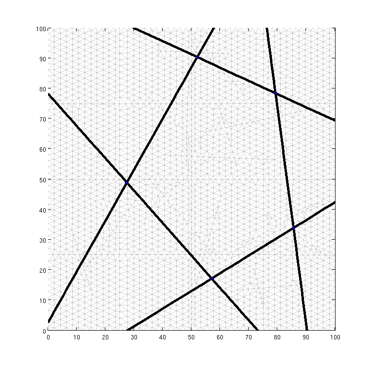
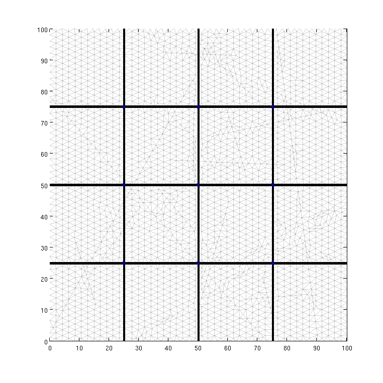
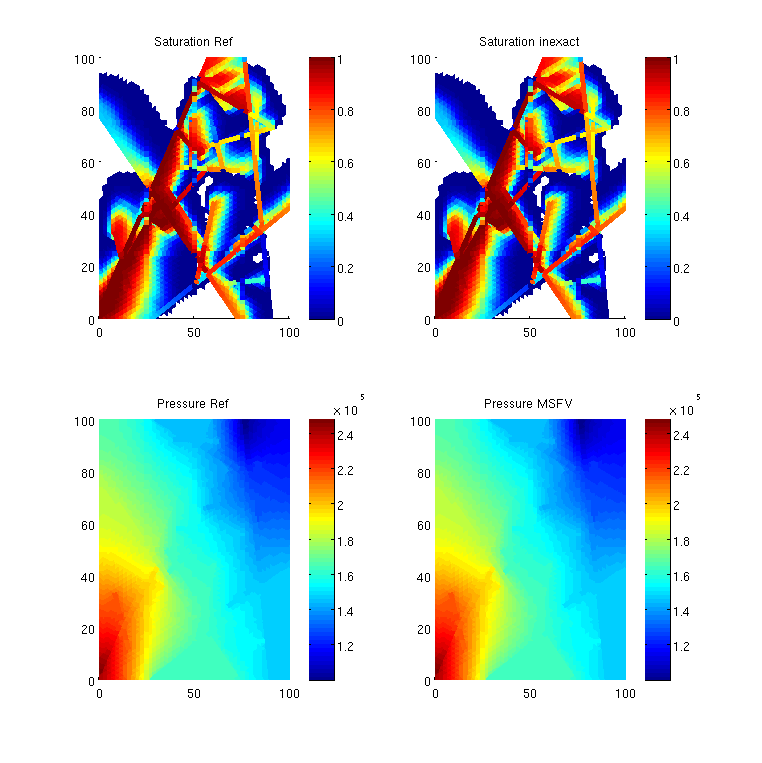
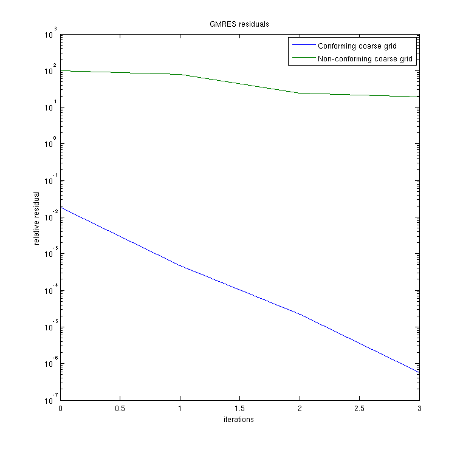
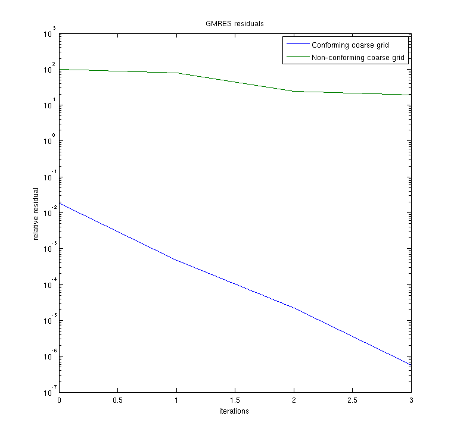

Contents
- An example using the MsFV method where the coarse grid is based on fractures
- set up the case
- set up the solver
- Run the two cases
- Set up permeability
- Define a simple two phase fluid object
- Extract dual grid from g_fine
- Generate primal grid
- Setup a producer / injector pair of wells
- Set up solution structures with only one phase
- Set up pressure and transport solvers
- Implicit transport solver
- Solve initial pressure in reservoir
- Transport loop
- Start the main loop
- Plot results
An example using the MsFV method where the coarse grid is based on fractures
This example shows how to construct a coarse model for the MsFV method based on fractures. To demonstrate the flexibility of the method two set of fractures are considered. The first set named coarse-scale fractures are used to define the coarse model, while another set named fine-scale fractures are only included in the fine-scale model. For comparison an example where the coarse grid is not based on the fractures is considered
For further details see: "Inexact linear solver for flow in multiscale fractures" T.H. Sandve, E. Keilegavlen and J. M. Nordbotten submittet to Water Resources Research 2013
Copyright 2011-2012 University of Bergen, 2013 IRIS AS
This file is licensed under the GNU General Public License v3.0.
AUTHOR: Tor Harald Sandve, tor.harald.sandve@iris.no
% include the needed modules mrstModule add coarsegrid msfvm dfm msfv-dfm % dock the figures close all set(0,'DefaultFigureWindowStyle','docked')
set up the case
% bounding box of the domain box = [0,0; 100,100]; % the two set of fractures are drawn in open-office fset{1} = struct('fractures','coarseFractures.odp',... 'box',box, ... 'precision',1e-3, ... 'aperture',0.001, ... 'tag', 1 ... ); fset{2} = struct('fractures','fineFractures.odp',... 'box',box, ... 'precision',1e-3, ... 'aperture',0.0005, ... 'tag', 2 ... ); % make an nonconforming coarse grid for comparison % for simplicity we use a Cartesian coarse grid % number of internal points i.e number of coarse cells = n1+1*n2+1 n = [3,3]; % tag for the coarse grid. tag = 3; makeCartFrac(n,tag,box,'cartCoarseGrid.mat') fset{3} = struct('fractures','cartCoarseGrid.mat',... 'box',box, ... 'precision',1e-3, ... 'aperture',.1, ... 'tag', tag ... ); % number of fine-scale cells numberOfFinecells = 5000; % Plot grids doPlotGrid = true; % Plot transport doPlotSim = true; % Plot results doPlotRes = true;
set up the solver
% number of GMRES iterations iterations = 3; % As we want to control GMRES with number of iterations rather than % the tolerance, we use a strict tolerance that we most probably would not % reach in a few iterations tolerance = 1e-16;
Run the two cases
for casenr = 1:2
switch casenr case 1 % coarse fractures constraints the coarse dual grid coarseGrid = cell(1,1); coarseGrid{1} = fset{1}; coarseGrid{1}.merge = true; coarseGrid{1}.apertureType = 'constants'; fineGrid = cell(2,1); fineGrid{2} = fset{2}; fineGrid{1} = fset{3}; case 2 % the Cartesian grid is used as constraints for the coarse dual grid coarseGrid = cell(1,1); coarseGrid{1} = fset{3}; coarseGrid{1}.merge = true; coarseGrid{1}.apertureType = 'constants'; fineGrid = cell(2,1); fineGrid{1} = fset{1}; fineGrid{2} = fset{2}; end t = tic; % filename for to save the grids grid_filename = ['grids-',int2str(casenr),'.mat']; % create the grid hierarchy [g_dual,g_fine] = createGridHierarchy(coarseGrid,fineGrid,'save',grid_filename,... 'numElements', numberOfFinecells,'precision',1e-3,'box',box); toc(t)
Make coarse grid Get fine-scale fractures Make fine grid Get fine-scale fractures Get fine-scale fractures Elapsed time is 0.401046 seconds.
Make coarse grid Get fine-scale fractures Make fine grid Get fine-scale fractures Get fine-scale fractures Elapsed time is 0.397318 seconds.
Set up permeability
% uniform matrix permeability rock.perm = repmat(100*milli*darcy, [g_fine.cells.num, 1]); rock.poro = repmat(0.1 , [g_fine.cells.num, 1]); % use the cubic assumption for the fracture permeability % with unit porosity kf = g_fine.faces.apertures.^2/12; for i = 2:-1:1 % note that hybrid cells with tag 3 % i.e the Cartesian grid is omitted from the loop) [fcells,ncells] = getFractureCells(g_fine,i); rock.perm(fcells) = kf(g_fine.cells.tags(fcells)); rock.perm(ncells) = max(kf(g_fine.cells.tags(fcells))); rock.poro(fcells) = 1; rock.poro(ncells) = 1; end % compute the fine-scale transmissibilities S = computeTrans_DFM(g_fine, rock,'hybrid',true); % compute the fine-scale hybrid transmissibilities if isfield(g_fine,'hybridNeighbors') [g_fine,S2] = computeHybridTrans(g_fine,S); else S2 = []; end
Define a simple two phase fluid object
Linear tracer transport
fluid = initSimpleFluid('mu' , [ 1, 1]*centi*poise , ... 'rho', [1014, 859]*kilogram/meter^3, ... 'n' , [ 1, 1]);
Extract dual grid from g_fine
DG = partitionDualDFM(g_fine);
DG.lineedge = [];
% store the dual grid in the grid structure
g_fine.cells.level = zeros(g_fine.cells.num,1);
g_fine.cells.level(DG.nn) = 0;
g_fine.cells.level(DG.ee) = 1;
g_fine.cells.level(DG.ii) = 2;
% plot the dual grid
if doPlotGrid
clf, plotDual_DFM(g_fine, DG)
end
  Generate primal grid
p = partitioningByAggregation(g_fine,DG);
CG = generateCoarseGrid(g_fine, p);
CG = coarsenGeometry(CG);
Setup a producer / injector pair of wells
% Place the producer / injector in the large-scale fractures [fcells,ncells] = getFractureCells(g_fine,1); % Injector in lower left corner c1 = findClosestCell(g_fine,box(1,1),box(1,2),fcells); % Producer in upper right corner c2 = findClosestCell(g_fine,box(2,1),box(2,2),fcells); % set up the well rate = 10*meter^3/day; bhp = 1*barsa; radius = 0.05; W = addWell([], g_fine, rock, c1 , ... 'Type', 'rate' , 'Val', rate, ... 'Radius', radius, 'InnerProduct', 'ip_tpf', ... 'Comp_i', [1, 0]); W = addWell(W, g_fine, rock, c2, ... 'Type', 'bhp' , 'Val', bhp, ... 'Radius', radius, 'InnerProduct', 'ip_tpf', ... 'Comp_i', [0, 1]); %W = []; % Alternatively a simple source src =[]; %src = addSource(src,double(c1),rate,'sat',[1,1]); %src = addSource(src,double(c2),-rate,'sat',[1,1]);
Set up solution structures with only one phase
refSol = initResSol(g_fine, bhp, [0, 1]);
msSol = refSol;
gravity off
verbose = false;
Set up pressure and transport solvers
% Reference TPFA r_psolve = @(state) incompTPFA_DFM(state, g_fine, S, fluid, 'Wells', W,'src',src,'c2cTrans',S2,'MatrixOutput',true); % MsFV using a few GMRES iterations to improve flux error psolve = @(state) solveMSFV_TPFA_Incomp_DFM(state, g_fine, CG, S, fluid, ... 'Reconstruct', true, 'Dual', DG, 'src',src,'Wells', W,... 'Update', true, 'Iterations',iterations,'Tolerance', tolerance, 'Iterator', 'gmres','c2cTrans',S2);
Implicit transport solver
tsolve = @(state, dT) implicitTransport_DFM(state, g_fine, dT, rock, ... fluid, 'wells', W, 'src',src, ... 'verbose', false,'nltol',1e-1);
Solve initial pressure in reservoir
% referance solution refSol= r_psolve(refSol); % inexact solution msSol = psolve(msSol); % store data for plotting caseData.msSol{casenr} = msSol; caseData.g_fine{casenr} = g_fine; caseData.rock{casenr} = rock;
Transport loop
Solve a linear transport problem with fixed fluxes computed from the pressure equation
% Simulation time is 1 PVI if casenr == 1 T = sum(g_fine.cells.volumes.*rock.poro)./rate; dT = T/10; end
Start the main loop
Iterate through the time steps and plot the saturation profiles along the way.
t = 0;
msSat = [];
refSat = [];
%if doPlotSim, figure, end
while t < T,
% Solve transport equations using the transport solver
msSol = tsolve(msSol , dT);
refSol = tsolve(refSol, dT);
% Update the pressure based on the new saturation
%msSol = psolve(msSol);
%refSol = r_psolve(refSol);
% store saturation at source
msSat = [msSat ; msSol.s(c2,1)];
refSat = [refSat ; refSol.s(c2,1)];
% Increase time and continue if we do not want to plot saturation
if doPlotSim
clf;
% Saturation plot
subplot(2,2,1)
plotGrid_DFM(g_fine, 'FaceColor', 'None', 'EdgeAlpha', 0)
plotCellData_DFM(g_fine, refSol.s(:,1), refSol.s(:,1) > 1e-4);
plotFractures(g_fine,find(refSol.s(:,1) > 1e-4),refSol.s(:,1)); axis tight; colorbar;
title('Saturation Ref')
caxis([0 1]);
subplot(2,2,2)
plotGrid_DFM(g_fine, 'FaceColor', 'None', 'EdgeAlpha', 0)
plotCellData_DFM(g_fine, msSol.s(:,1), msSol.s(:,1) > 1e-4);
plotFractures(g_fine,find(msSol.s(:,1) > 1e-4),msSol.s(:,1)); axis tight; colorbar;
title('Saturation inexact')
% Align colorbars
caxis([0 1])
% Pressure plot
subplot(2,2,3)
plotCellData_DFM(g_fine, refSol.pressure); axis tight; colorbar;
title('Pressure Ref')
cbar = caxis();
subplot(2,2,4)
hs = plotCellData_DFM(g_fine, msSol.pressure); axis tight; colorbar;
title('Pressure MSFV')
caxis(cbar)
drawnow
end
t = t + dT;
end
caseData.refSat{casenr} = refSat;
caseData.msSat{casenr} = msSat;
 
end
Plot results
if doPlotRes % compare concentration at outlet clf plot(caseData.refSat{1},'*') hold all plot(caseData.msSat{1}) plot(caseData.msSat{2}) legend({'Reference solution','Conforming coarse grid','Non-conforming coarse grid'},'Location','SouthEast') xlabel('PVI') ylabel('Concentration') % compare the gmres residuals figure for i = 1:2 semilogy(0:caseData.msSol{i}.iter,caseData.msSol{i}.residuals(1:caseData.msSol{i}.iter+1)) hold all end legend({'Conforming coarse grid', 'Non-conforming coarse grid'}) title('GMRES residuals') xlabel('iterations') ylabel('relative residual') end
 
